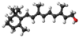

retinol

Definition: Retinol, also called vitamin A1, is a fat-soluble vitamin in the vitamin A family that is found in food and used as a dietary supplement. Retinol or other forms of vitamin A are needed for vision, cellular development, maintenance of skin and mucous membranes, immune function and reproductive development. Dietary sources include fish, dairy products, and meat. As a supplement it is used to treat and prevent vitamin A deficiency, especially that which results in xerophthalmia. It is taken by mouth or by injection into a muscle. As an ingredient in skin-care products, it is used to reduce wrinkles and other effects of skin aging.Retinol at normal doses is well tolerated. High doses may cause enlargement of the liver, dry skin, and hypervitaminosis A. High doses during pregnancy may harm the fetus. The body converts retinol to retinal and retinoic acid, through which it acts.Retinol was discovered in 1909, isolated in 1931, and first made in 1947. It is on the World Health Organization's List of Essential Medicines. Retinol is available as a generic medication and over the counter.
Source: Wikipedia
Wikipedia Page
Wikidata Page